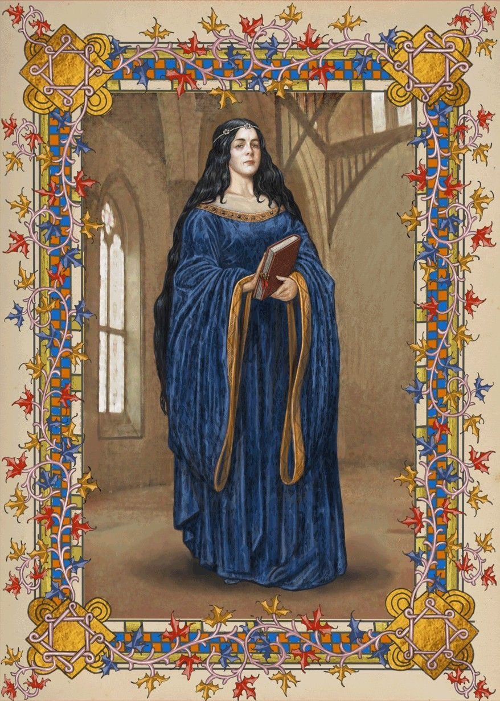
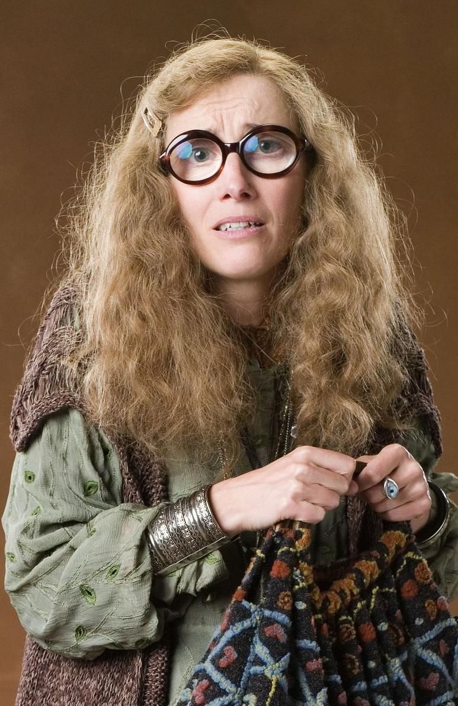

Bem vindos a CORVINAL

Fundador da casa corvinal
Rowena era considerada uma das bruxas mais brilhantes de sua época. Prezava pela sabedoria, criatividade e intelecto, valores que moldaram sua casa. Diz-se que foi ela quem imaginou a planta arquitetônica de Hogwarts, famosa por sua inteligência extraordinária.
Personagens mais famosos

Luna Lovegood enxerga o mundo de um jeito único, provando que coragem também vive na imaginação.

Cho carrega delicadeza e força ao mesmo tempo, mostrando que o coração é tão complexo quanto o voo de um patrono.

Sibila Trelawney vive entre névoas e visões, sempre acreditando que o destino sussurra para quem sabe ouvir.
Diretor da casa

Filius flitwick